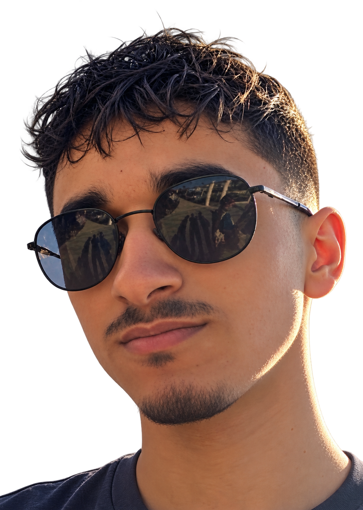

01
Programming &
Web Development
- HTML
- CSS
- JavaScript
- Node.js
Artificial Intelligence & Software Engineering
3rd-Year AI Engineering Student at ESPRIT
Exploring Artificial Intelligence.
Building Thoughtful Software.
I'm a third-year Artificial Intelligence Engineering student at ESPRIT with a background in front-end development, Flutter, and backend fundamentals. I'm currently expanding my knowledge of deep learning, NLP, and LLM-based applications while building practical software solutions.

01 — About
My path into software started with responsive websites and interactive interfaces. Since then, I've worked with Flutter for mobile applications and Node.js for backend functionality.
Now, as a third-year AI Engineering student at ESPRIT in Tunisia, I'm building on that development foundation through deep learning, NLP, and LLM training. I'm interested in how these ideas become useful, reliable software.
I learn by experimenting, working through technical challenges, and improving what I build.
02 — Selected work
03 — Technical skills
01
02
03
Learning & foundations
04
04 — Certifications
NVIDIA Deep Learning Institute 2025
05 — Education
École Supérieure Privée d'Ingénierie et de Technologies
06 — Contact
I'm open to academic opportunities, internships, technical collaborations, and interesting software projects.